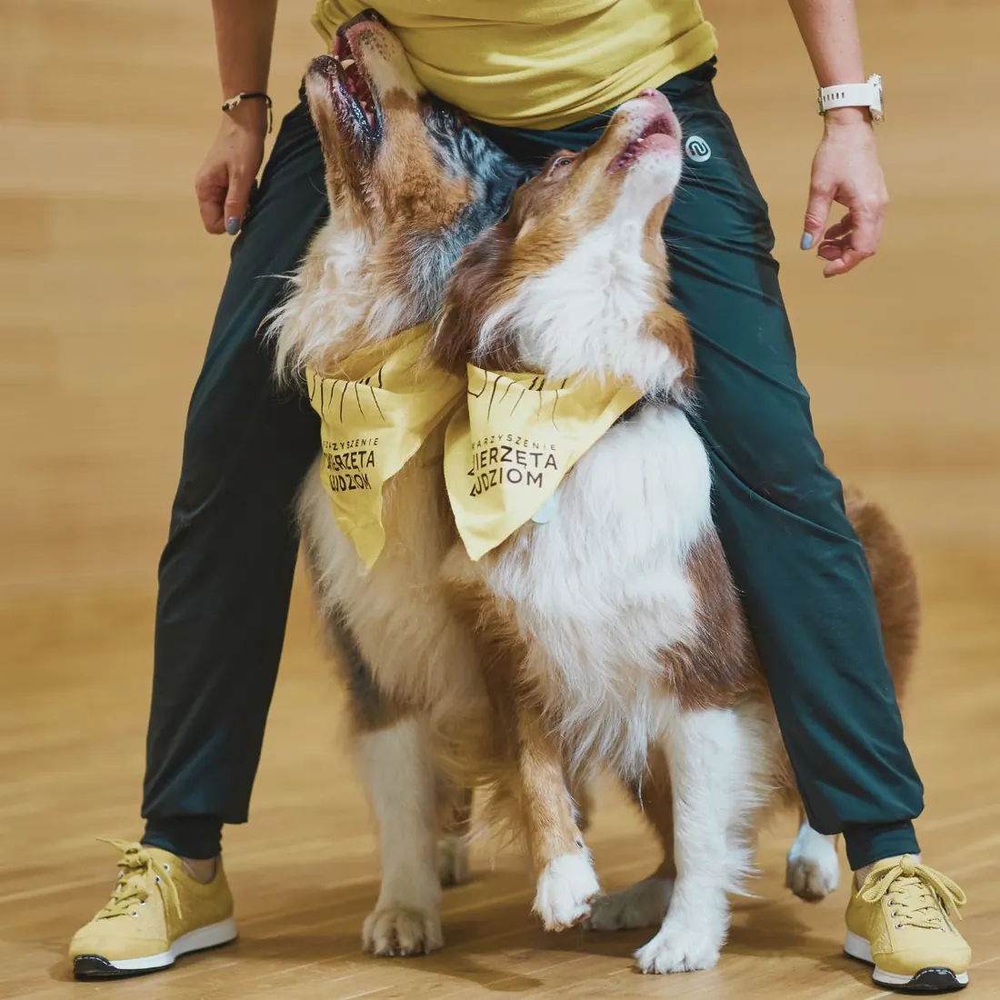
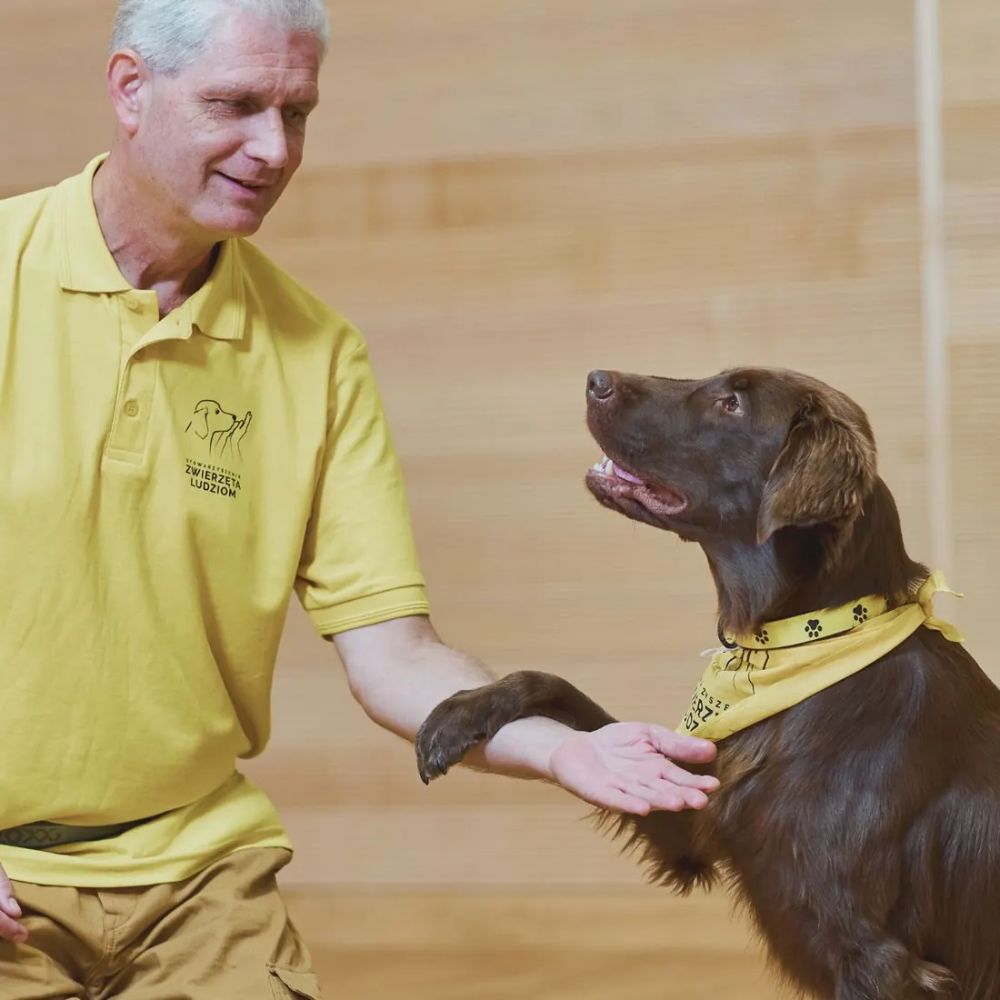
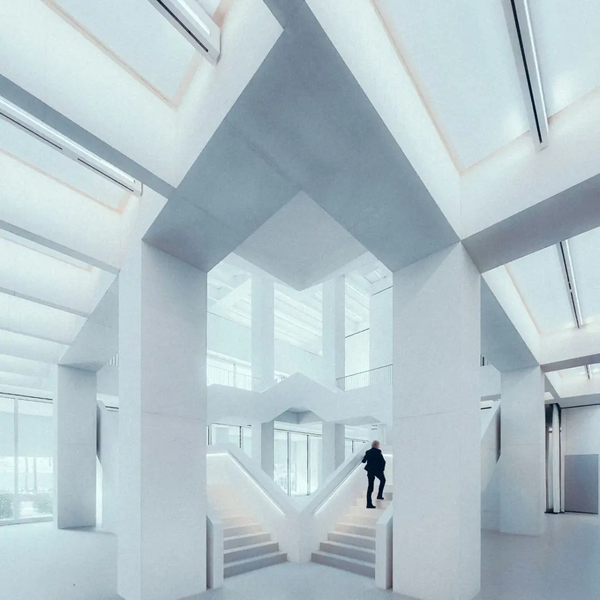
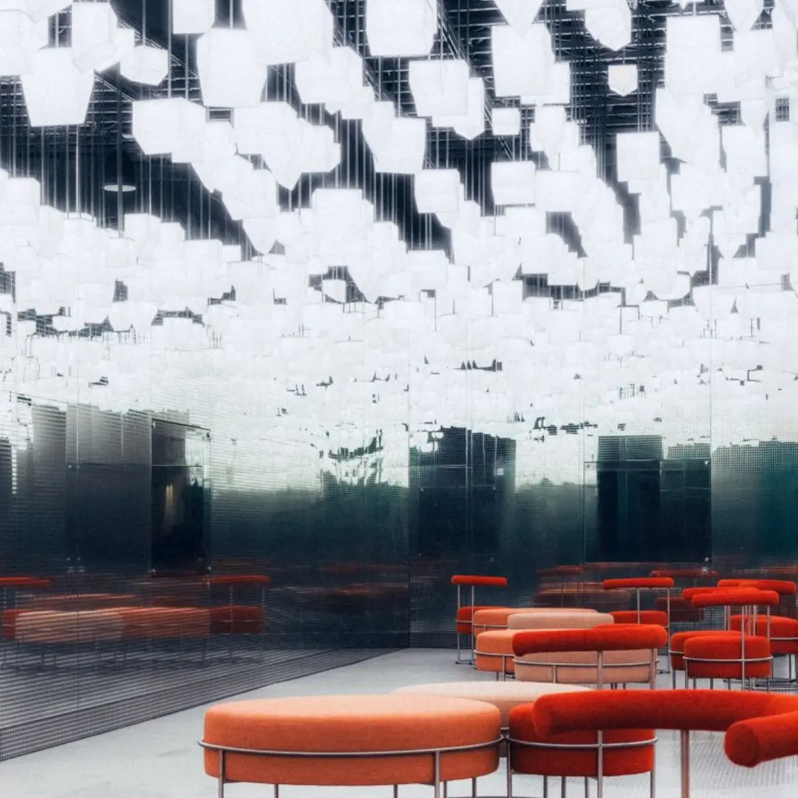
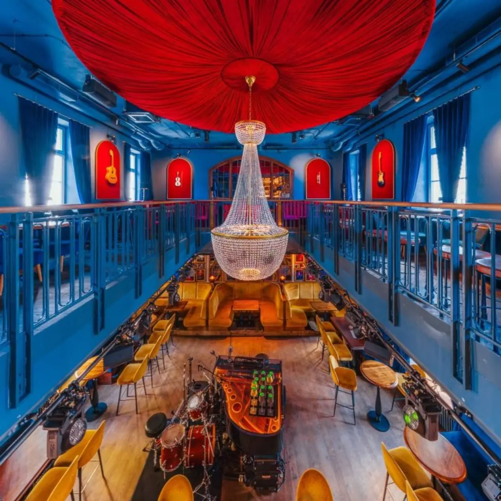
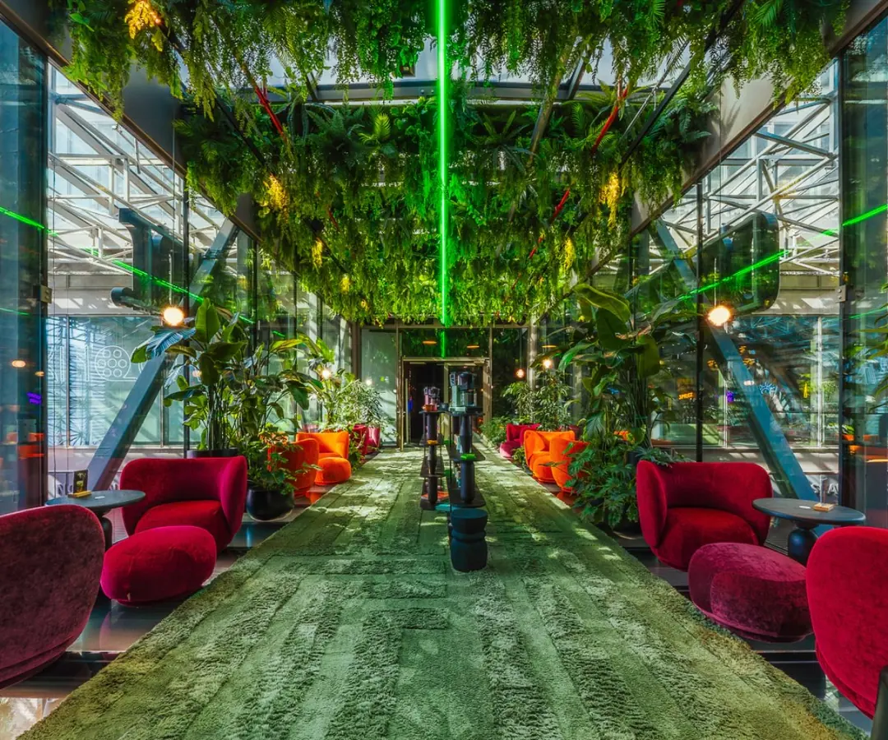

International Canine
Science Conference
Call for abstracts is open until February 28, 2027
About Canine Science Forum
The Canine Science Forum (CSF) is the premier international interdisciplinary conference dedicated to the biology, ecology, and behaviour of dogs, wolves, and other canids. Established in 2008 and held biennially, it serves as the definitive platform for scientists to share cutting-edge research and foster global collaboration.
Mission & Objectives
The Forum promotes canine biology as a vital model for scientific investigation while leveraging evidence-based knowledge to improve animal welfare and human-canine integration.
Consolidating canine biology as a rigorous, interdisciplinary field.
Enhancing the role of dogs in a rapidly evolving modern world.
Promoting non-invasive research technologies and best scientific practices.
Spreading awareness of the beneficial roles dogs play in society.
Tinbergen's Four Questions
Our program is structured around Tinbergen's Four Questions, ensuring a comprehensive exploration of canine science.
The physiological and neurological basis of behaviour.
The development and growth of canids throughout their lifespan.
The adaptive value and purpose of specific traits and behaviours.
The phylogenetic history and selective pressures shaping the species.
4 days!
Three days of cutting-edge canine science plus a dedicated day for Animal Assisted Services
Canine Science
Three days of talks, poster sessions, and discussions covering the latest in dog and wolf research — from genetics and cognition to behavior and welfare.
- Keynote lectures by leading researchers
- Peer-reviewed oral & poster presentations
- Thematic sessions on cognition, welfare & genetics
- Structured networking breaks
Dogs in Animal Assisted Services
A full day dedicated to the science behind therapy, assistance, and intervention work with dogs — new for this edition.
- Effectiveness of Animal Assisted Services
- Dog personality & suitability assessment
- Building safer, ethical AAS programs
- For program managers & researchers alike
Who Comes to CSF?
Academic leaders and visionaries. Share your latest empirical findings, challenge existing paradigms, and shape the theoretical future of canine science alongside the world's top experts.

The engine of data and discovery. Present your methodologies, get expert peer feedback on your research design, and find collaborators to scale your impact across 35+ countries.

Trainers, behaviorists, therapists, veterinarians. Get the science behind the methods. No jargon walls, no gatekeeping — just actionable insights for your daily work.
Leading Voices in Canine Science
We are assembling a program of leading researchers and experienced practitioners. Confirmed speakers will be announced as they are finalized.
The speaker lineup for CSF 2027 is being curated with care. Expect keynote lectures from world-class researchers, alongside experienced practitioners who bridge the gap between lab and field.
Want to present? The call for abstracts is open until February 28, 2027 (23:00 CET). How to submit an abstract
University of Warsaw
Faculty of Psychology
ul. Banacha 2d, Warsaw
A modern facility with a large auditorium for plenary sessions, breakout rooms for parallel tracks, and an open atrium where most of the informal networking happens. Everything in one building, ten minutes from the city center.
Early Career Scientist Award
The Organizing Committee of the 10th Canine Science Forum invites exceptional early-career researchers to apply for the prestigious Early Career Scientist Award.
Continuing the CSF tradition, we aim to recognize a rising star in the field. The winner will be invited to deliver a plenary lecture, showcasing their work to the international scientific community.
Eligibility & Admission
- Career Stage Within 7 years of PhD completion (extensions available for parental leave or military service)
- Position Must not hold a permanent academic or equivalent position
- Role Must be a Principal Investigator (or co-PI) of the submitted research
Scientific Scope
The proposed presentation must address one of the following themes:
Registration
Early Bird rates available until February 28, 2027. Registration closes May 31, 2027.
- All sessions (June 14–17)
- Daily coffee breaks & lunch
- Networking atrium access
- Full anniversary program
- All sessions (June 14–17)
- Daily coffee breaks & lunch
- Networking atrium access
- Full anniversary program
Warsaw: A Sophisticated Hub
of Science and Heritage
Experience a city where profound history meets the forefront of European innovation — a resilient intellectual center that seamlessly blends scholarly traditions with a dynamic, modern academic landscape.
The Academic Vibe
Warsaw offers a refined atmosphere for global thinkers — a city of contrasts, where meticulously restored historic districts coexist with a high-tech skyline, creating an inspiring environment for professional networking and scholarly reflection.
Intellectual Serenity by the Vistula
The Vistula riverbanks provide a sophisticated space for relaxation. The west bank offers elegant promenades and modernist architecture, while the east bank remains a rare, natural riparian forest — perfect for quiet contemplation.
A Global Intersection of Culture
From the Fryderyk Chopin Museum to its acclaimed culinary scene and neo-classical parks, Warsaw offers an enriching experience for those who appreciate both scientific rigor and aesthetic depth.
Exclusive Institutional Access
Delegates will engage with Warsaw's leading scientific community, including curated visits to top-tier facilities such as the Children's Memorial Health Institute — an insider's perspective on Poland's clinical excellence.




Photos: Aleksander Małachowski
Practical Information
The official language of the conference is English. All presentations, posters, and printed materials will be provided in English.
Simultaneous interpretation into Polish will be available for all sessions.
CSF 2027 is an in-person event. We believe the best connections happen face to face — especially the hallway conversations that make conferences truly valuable.
Unfortunately, dogs are not permitted inside the University of Warsaw building. If you are traveling with your dog, please arrange care in advance.
We can recommend pet-friendly accommodation and dog-sitting services in Warsaw — contact us for suggestions.
The venue is located in Warsaw's Ochota district. Recommended hotels within easy reach:
| Hotel | Distance | Price/night |
|---|---|---|
| Hampton by Hilton Warsaw Reduta (3-star) | ~1.5 km | €35–100 |
| Radisson Blu Sobieski (4-star) | ~2 km | €60–100 |
| ibis budget Warszawa West Station (2-star) | ~2 km | €35–50 |
We recommend booking early — June is a busy month in Warsaw.
Warsaw Chopin Airport (WAW) is about 8 km from the venue.
By bus: Bus 175 runs directly from the airport to the Banacha - Szpital stop — a 2-minute walk from the venue. Buses run every 15–20 minutes. Travel time: ~25 minutes.
By taxi/rideshare: ~20–30 minutes, around PLN 40–60 (~€9–14). Use Bolt, Uber, or FreeNow.
A single 75-minute ticket costs PLN 4.40 (~€1). We recommend the Jakdojade app for route planning.
Poland is a member of the Schengen Area.
Visa-free countries (USA, Canada, Australia, Japan, South Korea, Brazil, and 60+ others): No visa required for stays up to 90 days. Note: ETIAS may become mandatory for visa-exempt travelers in 2027.
Visa-required countries: Apply for a short-stay Schengen visa (Type C) at your nearest Polish embassy at least 6 weeks before travel. Fee: €80.
Invitation letter: We can provide a visa support letter after your registration is confirmed and paid. Contact us to request one.
Organized By
All abstracts are peer-reviewed by an independent Scientific Board
